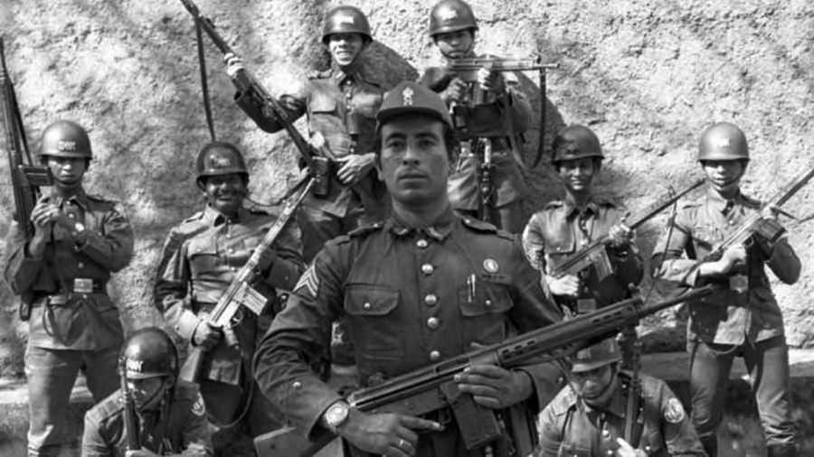
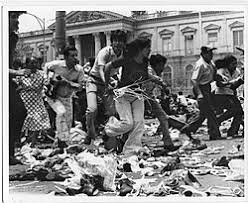

Bienvenidos a la historia de El Salvador
Este sitio está dedicado a la historia de El Salvador, con especial énfasis en la Guerra Civil (1980-1992). Navega por las secciones para aprender más sobre los eventos, personajes y consecuencias de este conflicto.
La Guerra Civil de El Salvador fue un conflicto armado interno que enfrentó al gobierno salvadoreño y al Frente Farabundo Martí para la Liberación Nacional (FMLN), dejando más de 75,000 muertos y desaparecidos, y marcando profundamente la historia del país:refs[1-53].
Historia de El Salvador
Antes de la llegada de los españoles, el territorio de El Salvador estaba habitado por diversos pueblos originarios, como los pipiles, lencas y mayas. Tras la conquista, el país pasó por períodos de colonización, independencia y conflictos internos, incluyendo la formación de la República Federal de Centroamérica:refs[3-25,30].
En el siglo XX, El Salvador vivió décadas de gobiernos militares y desigualdad social, lo que sentó las bases para el estallido de la Guerra Civil en 1980:refs[5-26,34].
Períodos clave:
- Época precolombina: Pueblos originarios y sus culturas.
- Colonización española y independencia (1821).
- Gobiernos militares y reformas agrarias fallidas (1930-1979).
- Guerra Civil (1980-1992) y Acuerdos de Paz de Chapultepec.
Guerra Civil de El Salvador (1980-1992)

Fecha: 15 de octubre de 1979 – 16 de enero de 1992
Lugar: El Salvador
Resultado: Acuerdos de Paz de Chapultepec
Beligerantes:
- Gobierno de El Salvador
- FMLN
La Guerra Civil de El Salvador fue un conflicto armado que enfrentó al gobierno salvadoreño, apoyado por Estados Unidos, y a las fuerzas insurgentes del Frente Farabundo Martí para la Liberación Nacional (FMLN). El conflicto dejó más de 75,000 muertos y desaparecidos, y marcó profundamente la historia del país:refs[7-53,16].
Causas
Desigualdad social, represión política y concentración de la tierra en manos de una élite económica, conocida como "las catorce familias". La falta de reformas agrarias y la represión a movimientos campesinos y obreros generaron un clima de tensión que estalló en violencia:refs[9-34,25].
Eventos clave
El conflicto comenzó oficialmente en 1980, tras el asesinato del arzobispo Óscar Romero, un símbolo de la lucha por los derechos humanos. Durante la guerra, se registraron graves violaciones a los derechos humanos, incluyendo masacres como la de El Mozote:refs[11-16,15].
Fin de la Guerra
El conflicto terminó el 16 de enero de 1992 con la firma de los Acuerdos de Paz de Chapultepec, que incluyeron la desmovilización del FMLN y la creación de la Policía Nacional Civil:refs[13-53].
Personajes Importantes
Durante la Guerra Civil de El Salvador, destacaron figuras clave en ambos bandos:
Gobierno y Fuerzas Armadas
- Roberto D'Aubuisson: Fundador del partido ARENA y líder de los escuadrones de la muerte:refs[15-22].
- José Napoleón Duarte: Presidente de El Salvador durante parte del conflicto, representante del Partido Demócrata Cristiano:refs[17-26].
- Alfredo Cristiani: Presidente durante la firma de los Acuerdos de Paz:refs[19-29].
FMLN y Activistas
- Óscar Romero: Arzobispo de San Salvador, asesinado en 1980 por su defensa de los derechos humanos:refs[21-14,15].
- Salvador Sánchez Cerén: Comandante guerrillero y posterior presidente de El Salvador:refs[23-20].
- Joaquín Villalobos: Líder del FMLN y estratega militar:refs[25-20].

